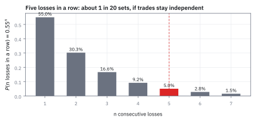

1.2 Discrete Random Variables and the Probability Mass Function (PMF)
PMF แจกโอกาสให้ทีละค่าที่ random variable เป็นได้ และโอกาสของเหตุการณ์ใดก็ตามคือผลรวมของแท่งที่เข้าเงื่อนไข
เทรดเดอร์ซื้อ TSLA 200 หุ้นที่ \$200 ตั้งจุดตัดขาดทุนที่ \$195 และเป้าขายทำกำไรที่ \$210 จากการทดสอบย้อนหลัง (สมมติ) แบบจำลองบอกว่าการซื้อขายแบบนี้โดนตัดขาดทุน 55% ออกเท่าทุน 15% และถึงเป้า 30% เขาถามสองข้อ: โอกาส “ไม่ขาดทุน” คือ 30% หรือ 45% และในเมื่อแพ้บ่อยกว่าชนะ กลยุทธ์นี้เสียเปรียบแน่หรือเปล่า
ลองตอบก่อนเปิดเฉลย
“ไม่ขาดทุน” รวมทั้งกรณีเท่าทุนและกรณีกำไร จึงได้ $0.15+0.30=0.45$ หรือ 45% ตัวเลข 30% คือโอกาส “ชนะ” ซึ่งเป็นอีกคำถามหนึ่ง ส่วนข้อสองคำตอบคือยังไม่เสียเปรียบ: ครั้งที่แพ้เสีย \$1,000 แต่ครั้งที่ชนะได้ \$2,000 ผลชนะจึงดึงค่าเฉลี่ยขึ้น $2\times0.30=0.60$ เท่าของ \$1,000 ขณะที่ผลแพ้ดึงลง $1\times0.55=0.55$ เท่า เหลือเฉลี่ยบวก \$50 ต่อครั้งก่อนค่าใช้จ่าย ทั้งสองคำตอบมาจากตารางเดียวกันที่หน้านี้จะสร้าง คือ PMF
ภาพรวมก่อนลงสูตร
random variable ที่ค่าที่เป็นไปได้ไล่นับเป็นค่า ๆ ได้ เรียกว่า discrete random variable เช่น ผลการซื้อขายที่ออกได้แค่ −1R, 0R หรือ +2R หรือจำนวนบริษัทที่ผิดนัดชำระหนี้ 0, 1, 2, … ราย สำหรับตัวแปรแบบนี้ เราบอกโอกาสได้ตรง ๆ ทีละค่า ฟังก์ชันที่รับค่า $x$ แล้วคืนโอกาสที่ $X$ เท่ากับ $x$ พอดี เรียกว่า probability mass function หรือ PMF
PMF มีกฎแค่สองข้อ คือห้ามติดลบและต้องรวมได้หนึ่ง แต่ให้พลังมาก เพราะโอกาสของเหตุการณ์ใดก็ตาม เช่น “ไม่ขาดทุน” หรือ “ผลรวมลูกเต๋าตั้งแต่ 8” คือการเลือกแท่งที่เข้าเงื่อนไขแล้วบวกกัน ส่วน CDF จาก หน้า random variable และ CDF ก็คือ PMF ที่บวกสะสมจากซ้ายไปขวา
หน้านี้จะแปลงแผนซื้อขายเป็นตัวเลข สร้างและตรวจ PMF ใช้มันตอบคำถามเหตุการณ์ แปลงกลับไปมากับ CDF สร้าง PMF จากการนับช่องที่มีโอกาสเท่ากัน แล้วดูสองเรื่องที่ PMF ของครั้งเดียวบอกไม่ได้: ความสัมพันธ์ระหว่างหลายครั้ง และผลลัพธ์ที่ตกหล่นไปจากตาราง
รูป — แท่ง PMF กลายเป็นการกระโดดของ CDF
ศัพท์ที่ใช้ในหน้านี้
- discrete random variable
- random variable ที่ค่าที่เป็นไปได้ไล่นับเป็นค่า ๆ ได้ อาจมีจำนวนจำกัดหรือไม่สิ้นสุดก็ได้ เช่น 0, 1, 2, … ใช้กับผลที่ออกเป็นก้อน เช่น ผลการซื้อขายแบบตั้งจุดออก หรือจำนวนครั้งที่เหตุการณ์เกิด
- PMF (probability mass function)
- $p(x)=P(X=x)$ โอกาสที่ $X$ เท่ากับ $x$ พอดี ใช้หาโอกาสของเหตุการณ์ใด ๆ ด้วยการบวกแท่ง
- R-multiple
- กำไรขาดทุนหารด้วยเงินที่วางแผนเสี่ยงต่อการซื้อขาย (1R) ใช้เปรียบเทียบการซื้อขายที่ขนาดเงินต่างกันบนสเกลเดียว
- เหตุการณ์ (event)
- เงื่อนไขที่ผลลัพธ์อาจเข้าหรือไม่เข้า เช่น “ไม่ขาดทุน” โอกาสของมันคือผลรวมของ PMF เฉพาะค่าที่เข้าเงื่อนไข
- independence
- การรู้ผลครั้งหนึ่งไม่เปลี่ยนโอกาสของอีกครั้ง เป็นเงื่อนไขที่ทำให้คูณโอกาสของแต่ละครั้งเข้าด้วยกันได้
- gap
- ราคากระโดดข้ามระดับที่ตั้งไว้ เช่น เปิดตลาดต่ำกว่าจุดตัดขาดทุน ทำให้ขายได้แย่กว่าแผน เป็นผลลัพธ์ที่ตาราง PMF แบบง่ายมักลืมใส่
สัญลักษณ์ ความหมาย และหน่วย
| สัญลักษณ์ | ความหมาย | หน่วย |
|---|---|---|
| $X$ | ผลของการซื้อขายหนึ่งครั้ง ยังไม่รู้ก่อนซื้อขาย | R |
| $x$, $t$ | ค่าหนึ่งที่กำลังถาม, ตัวไล่ค่าในผลรวม | R |
| $p(x)$ | โอกาสที่ $X=x$ พอดี | ไม่มีหน่วย |
| $F(x)$, $F(x^-)$ | ยอดสะสมถึง $x$, ยอดสะสมก่อนถึง $x$ | ไม่มีหน่วย |
| 1R | เงินที่วางแผนเสี่ยงต่อการซื้อขาย | ดอลลาร์ |
ขั้นที่ 1 — แปลงแผนซื้อขายเป็นตัวเลขหน่วย R
ก่อนพูดถึงโอกาส ต้องรู้ก่อนว่า random variable ของเราคืออะไรและมีค่าอะไรได้บ้าง เราวัดกำไรขาดทุนของการซื้อขายหนึ่งครั้ง ไม่ใช่ราคาหุ้น และวัดเป็นจำนวนเท่าของเงินที่วางแผนเสี่ยง
ระยะจากราคาซื้อถึงจุดตัดขาดทุนคือ \$5 ต่อหุ้น คูณ 200 หุ้นได้เงินที่ยอมเสีย \$1,000 ซึ่งเราตั้งเป็นหนึ่งหน่วย 1R ระยะถึงเป้ากำไรคือ \$10 ต่อหุ้น เป็นสองเท่าของระยะตัดขาดทุน จึงได้ +2R การวัดเป็น R ทำให้การซื้อขาย 100 หุ้นกับ 1,000 หุ้นเปรียบเทียบกันได้บนสเกลเดียว
ตอนนี้ $X$ มีค่าได้สามค่า คือ −1, 0 และ +2 ค่าเหล่านี้นับไล่ได้ $X$ จึงเป็น discrete random variable ส่วนตัวเลข 1R ไม่ใช่เพดานขาดทุนที่ตลาดรับประกัน เราจะกลับมาเรื่องนี้ตอนดูผลลัพธ์ที่ตกหล่น
รูป — บันไดราคาของแผนซื้อขาย
ขั้นที่ 2 — PMF และกฎสองข้อของมัน
เมื่อรู้ค่าที่เป็นไปได้แล้ว ขั้นถัดไปคือแจกโอกาสให้แต่ละค่า แล้วตรวจว่าการแจกนั้นใช้ได้ กฎสองข้อนี้คือสิ่งเดียวที่คณิตศาสตร์บังคับ ที่เหลือเป็นเรื่องว่าแบบจำลองตรงกับตลาดหรือไม่
ในการซื้อขายหนึ่งครั้ง ผลลัพธ์ออกได้ค่าเดียว −1R กับ +2R เกิดพร้อมกันไม่ได้ แถวต่าง ๆ ของตารางจึงไม่ซ้อนกัน และทุกแถวรวมกันครอบคลุมทุกกรณี โอกาสรวมจึงต้องเป็นหนึ่ง ค่าที่ไม่อยู่ในตาราง เช่น +1R มี $p(1)=0$
บรรทัดสุดท้ายคือนิยามที่ใช้งานจริง: โอกาสของเหตุการณ์ใดก็ตามคือผลรวมของ $p(x)$ เฉพาะค่า $x$ ที่เข้าเงื่อนไข ช่วงจาก $a$ ถึง $b$ เป็นแค่ตัวอย่างหนึ่งของเงื่อนไข เงื่อนไขจะเป็นอะไรก็ได้ เช่น “เป็นเลขคู่” หรือ “ไม่เท่ากับศูนย์” วิธีคิดเหมือนเดิมคือเลือกแท่งแล้วบวก
ขั้นที่ 3 — โอกาสของเหตุการณ์คือผลรวมของแท่งที่เข้าเงื่อนไข
ตอนนี้ตอบคำถามของเทรดเดอร์ได้ ขั้นที่สำคัญที่สุดอยู่ก่อนบวก คือเขียนให้ชัดว่าค่าใดเข้าเงื่อนไข: “ชนะ” มีแค่ +2R “ไม่ขาดทุน” มีทั้ง 0R และ +2R ส่วน “ขาดทุน” มีแค่ −1R
“ไม่ขาดทุน” กับ “ขาดทุน” แบ่งทุกแถวออกเป็นสองกองพอดี โอกาสจึงรวมกันได้หนึ่ง ใช้ตรวจคำตอบได้ทันที ส่วน “ชนะ” กับ “ขาดทุน” รวมได้แค่ 0.85 เพราะแถวเท่าทุนไม่อยู่ในกองไหนเลย ถ้าคำตอบ “ไม่ขาดทุน” ออกมาน้อยกว่า “ชนะ” แปลว่าลืมแถว 0R เพราะกองแรกครอบกองหลังไว้ทั้งหมด
รูป — เลือกแท่งก่อน แล้วค่อยบวก
ขั้นที่ 4 — PMF กับ CDF แปลงกลับไปมาได้
หน้าที่แล้วเราสร้าง CDF ด้วยการนับสะสม ตอนนี้มี PMF แล้ว จึงเขียนความสัมพันธ์ของสองตัวนี้ได้ตรง ๆ ทั้งสองทาง ตามที่รูปภาพรวมด้านบนแสดงไว้
ตัวไล่ $t$ วิ่งผ่านค่าที่เป็นไปได้ทุกค่าแล้วเก็บเฉพาะค่าที่ไม่เกิน $x$ เช่น $F(1)$ เก็บ −1R กับ 0R ได้ 0.70 เท่ากับ $F(0)$ เพราะไม่มีผลลัพธ์อยู่ระหว่าง 0R กับ +2R ทางกลับใช้ขนาดการกระโดด: ยอดที่รวม $x$ ลบยอดก่อนถึง $x$ เหลือโอกาสของ $x$ ค่าเดียว PMF กับ CDF จึงเป็นข้อมูลชุดเดียวกันที่จัดเก็บสองแบบ แบบแรกตอบ “เท่ากับ” ได้ไว แบบหลังตอบ “ไม่เกิน” ได้ไว
ขั้นที่ 5 — สร้าง PMF จากการนับช่องที่มีโอกาสเท่ากัน: ลูกเต๋าสองลูก
โจทย์ให้อะไรมาบ้าง: ทอยลูกเต๋าที่ยุติธรรมสองลูกแยกกัน ให้ $Y_1$ และ $Y_2$ เป็นแต้มของแต่ละลูก และ $X=Y_1+Y_2$ เป็นผลรวม ต้องการ PMF ของ $X$ และโอกาสที่ผลรวมตั้งแต่ 8 ขึ้นไป ตัวอย่างนี้สำคัญเพราะแสดงว่า PMF มักไม่ได้ให้มาตรง ๆ แต่ต้องสร้างจากผลลัพธ์พื้นฐานที่มีโอกาสเท่ากัน ให้ $c(s)$ เป็นจำนวนคู่แต้มที่ให้ผลรวมเท่ากับ $s$
คำตอบ: ลูกเต๋าสองลูกให้ผลพื้นฐาน $6\times6=36$ คู่ที่มีโอกาสเท่ากัน คู่ละ 1/36 ผลรวมแต่ละค่าได้โอกาสเท่ากับจำนวนคู่ที่ให้ผลรวมนั้น ผลรวม 7 มีหกคู่ จึงออกบ่อยที่สุด ผลรวม 2 กับ 12 มีคู่เดียว โอกาสที่ผลรวมตั้งแต่ 8 คือ 15 ช่องจาก 36 หรือประมาณ 41.67%
ตรวจเองใน 10 วินาที: PMF ต้องรวมได้หนึ่ง: $1+2+3+4+5+6+5+4+3+2+1=36$ ช่องพอดี ถ้าคิดว่าผลรวม 11 ค่า (2 ถึง 12) ออกเท่า ๆ กัน จะได้ $P(X\ge8)=5/11\approx45.45\%$ ซึ่งผิด เพราะหน่วยที่มีโอกาสเท่ากันคือคู่แต้ม ไม่ใช่ค่าผลรวม
รูป — ตาราง 36 ช่องกับ PMF ของผลรวม
ขั้นที่ 6 — หลายครั้งต้องรู้ว่าผลแต่ละครั้งเกี่ยวกันหรือไม่
เทรดเดอร์ถามต่อว่า “ห้าครั้งถัดไปแพ้หมดได้แค่ไหน” PMF ของครั้งเดียวยังตอบไม่ได้ เราต้องรู้เพิ่มว่าผลครั้งก่อนเปลี่ยนโอกาสครั้งถัดไปหรือไม่ ถ้าไม่เปลี่ยน เรียกว่า independence และโอกาสของลำดับที่กำหนดไว้คือผลคูณของโอกาสแต่ละครั้ง
ทำไมคูณได้: ในการซื้อขายจำนวนมาก ราว 55% แพ้ครั้งแรก และในกลุ่มที่แพ้ครั้งแรกนั้น ถ้าผลครั้งที่สองไม่สนใจครั้งแรก ก็จะแพ้อีกราว 55% สัดส่วนที่แพ้ทั้งคู่จึงเป็น 55% ของ 55% คือ 0.3025 ทำซ้ำห้าชั้นได้ราว 5.03% นี่คือโอกาสของชุดห้าครั้งที่ระบุไว้ล่วงหน้า ไม่ใช่โอกาสที่จะเจอแพ้ห้าครั้งติดสักช่วงใดช่วงหนึ่งใน 100 ครั้ง ซึ่งสูงกว่ามาก เพราะมีจุดเริ่มนับได้หลายตำแหน่ง
บรรทัดสุดท้ายแสดงว่าสมมติฐานเปลี่ยนคำตอบ ถ้าหลังแพ้ โอกาสแพ้ครั้งถัดไปขึ้นเป็น 0.70 เช่น ช่วงที่ตลาดไม่เข้าทางกลยุทธ์ โอกาสแพ้ห้าครั้งรวดจะเป็น 13.21% สูงกว่าเดิมกว่าสองเท่า ทั้งที่ PMF ของครั้งแรกยังเป็น 0.55 เหมือนเดิม
รูป — ต้นไม้ของการซื้อขายสองครั้ง
รูป — เงื่อนไขยิ่งยาว โอกาสยิ่งเล็ก

เส้น $0.55^n$ ลดลงทุกครั้งที่เพิ่มเงื่อนไขว่าต้องแพ้อีกหนึ่งครั้ง ที่ $n=5$ ได้ประมาณ 5.03% เส้นนี้ใช้ได้กับชุดที่กำหนดตำแหน่งไว้ก่อนและภายใต้ independence เท่านั้น
ขั้นที่ 7 — ผลลัพธ์ที่ตกหล่นจากตาราง
PMF ที่รวมได้หนึ่งผ่านกฎคณิตศาสตร์ แต่ยังอาจลืมผลลัพธ์ที่เกิดได้จริง จุดตัดขาดทุนที่ \$195 ไม่ได้รับประกันราคาขาย ถ้าข่าวร้ายออกตอนตลาดปิดแล้วเช้าวันรุ่งขึ้นเปิดที่ \$175 คำสั่งขายจะได้ราวราคานั้น ขาดทุน \$25 ต่อหุ้น หรือ $25/5=5$ เท่าของระยะที่วางแผน ลองสมมติว่าใน 55% ที่แพ้ มีส่วน 1% ที่เป็นแบบนี้
จุดที่ต้องระวังคือการเพิ่มแถวโดยไม่ปรับแถวอื่น ถ้าเติม $p(-5)=0.01$ แล้วปล่อย $p(-1)$ ไว้ที่ 0.55 ผลรวมจะเป็น 1.01 ผิดกฎทันที เราจึงย้ายโอกาส 0.01 ออกจากแถว −1R ไปไว้ที่แถว −5R โอกาสแพ้รวมยังเป็น 55% เท่าเดิม อัตราแพ้ชนะไม่เปลี่ยนเลย แต่กำไรเฉลี่ยต่อครั้งหายไป 80% จาก 0.05R เหลือ 0.01R เพราะแถวที่เพิ่มมาเสียหนักมาก ค่าเฉลี่ยแบบถ่วงโอกาสนี้คือเรื่องของ expected value หน้าถัดไป ตัวเลข 1% เป็นสมมติฐานเพื่อฝึกคิด ไม่ใช่ค่าประมาณของ TSLA
รูป — แท่งเล็กแท่งเดียวที่กินกำไรเฉลี่ย
จุดที่พลาดแล้วได้คำตอบผิดโดยไม่รู้ตัว
ลืมแถวขอบ: “ไม่ขาดทุน” ต้องรวมแถว 0R ได้ 45% ถ้าลืมจะได้ 30% ซึ่งเป็นคำตอบของคำถามอื่น เขียนรายชื่อค่าที่เข้าเงื่อนไขทุกครั้งก่อนบวก
ให้ค่าที่ต่างกันมีโอกาสเท่ากันเอง: ผลรวมลูกเต๋ามี 11 ค่า แต่ไม่ได้มีโอกาสค่าละ 1/11 การคิดแบบนั้นให้ $P(X\ge 8)=45.45\%$ แทน 41.67% หน่วยที่มีโอกาสเท่ากันต้องหาให้เจอก่อน แล้วค่อยนับ
คูณโอกาสโดยไม่ตรวจ independence: $0.55^5=5.03\%$ ถูกต้องเฉพาะเมื่อผลแต่ละครั้งไม่เกี่ยวกัน ถ้าแพ้แล้วมีแนวโน้มแพ้ต่อ ตัวเลขจริงอาจเป็น 13.21% หรือมากกว่า การวางแผนเงินทุนจากตัวเลขแรกจะทำให้เตรียมรับช่วงแพ้ติดกันน้อยเกินไป
เติมแถวโดยไม่ปรับน้ำหนัก: เพิ่มกรณี gap 0.01 โดยไม่ลดแถวอื่น ตารางรวมได้ 1.01 ทุกตัวเลขที่คำนวณต่อจะคลาดหมด เมื่อแยกกรณีใหม่ออกมา ต้องบอกว่าโอกาสนั้นย้ายมาจากแถวไหน
ใช้ทำอะไรบนโต๊ะจริง
การสร้าง PMF จาก backtest คือการนับว่าการซื้อขายย้อนหลังจบที่ผลลัพธ์แต่ละแบบกี่ครั้ง แล้วหารด้วยจำนวนครั้งทั้งหมด เหมือนการนับวันใน ECDF ตัวเลขที่ได้มีความไม่แน่นอนจากข้อมูลที่จำกัด และควรแยกกรณีที่ขายได้แย่กว่าแผนออกมาเป็นแถวของตัวเอง ไม่ปนอยู่ในแถว −1R PMF ยังใช้ประเมินสัญญาที่จ่ายเป็นก้อน เช่น สัญญาที่จ่าย \$100 เฉพาะเมื่อถึงเป้า +2R จ่ายเฉลี่ย $100\times0.30=\$30$ ต่อครั้ง แต่ราคาที่ควรซื้อขายสัญญาแบบนี้ต้องคิดเรื่องเวลาและความเสี่ยงเพิ่ม ซึ่งเป็นเรื่องของการตั้งราคา derivative ในภายหลัง
โจทย์ตรวจความเข้าใจ
1. คูปองห้าใบ: ส่วนลด \$1 สามใบ \$5 หนึ่งใบ และ \$10 หนึ่งใบ หยิบหนึ่งใบโดยทุกใบมีโอกาสเท่ากัน เขียน PMF ของส่วนลด แล้วหาโอกาสได้ส่วนลดอย่างน้อย \$5 ทำไมคำตอบจึงไม่ใช่ 2/3
เฉลย
หน่วยที่มีโอกาสเท่ากันคือคูปองแต่ละใบ จึงได้ $p(1)=3/5$, $p(5)=1/5$ และ $p(10)=1/5$ รวมได้หนึ่ง โอกาสได้อย่างน้อย \$5 คือ $1/5+1/5=2/5=40\%$ คำตอบ 2/3 มาจากการให้ค่าส่วนลดสามค่ามีโอกาสค่าละ 1/3 ซึ่งผิด เพราะค่า \$1 มีคูปองถึงสามใบ
2. อีกกลยุทธ์ให้ −1R, 0R และ +1R ด้วยโอกาส 0.40, 0.20 และ 0.40 และแต่ละครั้งเป็นอิสระกัน ตรวจว่าเป็น PMF หาโอกาสไม่ขาดทุน โอกาสแพ้ทั้งห้าครั้งในชุดที่กำหนด และกำไรเฉลี่ยต่อครั้ง
เฉลย
ทุกโอกาสไม่ติดลบ และ $0.40+0.20+0.40=1$ จึงเป็น PMF โอกาสไม่ขาดทุนคือ $0.20+0.40=0.60$ โอกาสแพ้ห้าครั้งคือ $0.40^5=0.01024$ หรือ 1.024% กำไรเฉลี่ยคือ $(-1)(0.40)+0(0.20)+1(0.40)=0R$ กลยุทธ์นี้ไม่ขาดทุนบ่อยกว่าและแพ้ห้าครั้งรวดยากกว่ากลยุทธ์ TSLA แต่ค่าเฉลี่ยเป็นศูนย์ ขณะที่ TSLA ได้ 0.05R การเทียบกลยุทธ์จึงต้องดูทั้งขนาดผลลัพธ์และโอกาส ไม่ใช่อัตราชนะอย่างเดียว
3. ทอยลูกเต๋ายุติธรรมสองลูก โอกาสที่ผลรวมเป็น 7 หรือ 11 คือเท่าไร
เฉลย
ผลรวม 7 มีหกช่อง คือ (1,6), (2,5), (3,4), (4,3), (5,2), (6,1) ผลรวม 11 มีสองช่อง คือ (5,6) กับ (6,5) สองเหตุการณ์ไม่ซ้อนกัน จึงบวกได้ $p(7)+p(11)=6/36+2/36=8/36\approx22.22\%$
คำนวณซ้ำด้วย JavaScript
เปิดดูโค้ด
const pmf = [[-1, 0.55], [0, 0.15], [2, 0.30]];
const total = pmf.reduce((s, [x, p]) => s + p, 0);
const prob = test =>
pmf.filter(([x]) => test(x)).reduce((s, [x, p]) => s + p, 0);
console.log(total); // 1 (ตรวจกฎข้อสอง)
console.log(prob(x => x > 0)); // 0.30 ชนะ
console.log(prob(x => x >= 0)); // 0.45 ไม่ขาดทุน
console.log(prob(x => x <= 0)); // 0.70 = F(0)
// PMF ของผลรวมลูกเต๋าสองลูกจากการนับ 36 ช่อง
const dice = {};
for (let a = 1; a <= 6; a++)
for (let b = 1; b <= 6; b++) dice[a + b] = (dice[a + b] || 0) + 1 / 36;
let atLeast8 = 0;
for (let s = 8; s <= 12; s++) atLeast8 += dice[s];
console.log(dice[7], atLeast8); // 0.1667 0.4167
console.log(0.55 ** 5); // 0.0503 (independence)
console.log(0.55 * 0.70 ** 4); // 0.1321 (แพ้แล้วแพ้ต่อง่ายขึ้น)
console.log(-5 * 0.01 - 1 * 0.54 + 2 * 0.30); // 0.01 (มี gap)สิ่งที่ควรตอบได้หลังอ่าน
- PMF คือ $p(x)=P(X=x)$ ต้องไม่ติดลบและรวมได้หนึ่ง ค่าที่ไม่อยู่ในตารางมีโอกาสศูนย์
- โอกาสของเหตุการณ์ใดก็ตามคือผลรวมของ $p(x)$ เฉพาะค่าที่เข้าเงื่อนไข “ไม่ขาดทุน” ของกลยุทธ์ TSLA จึงเป็น 45% ไม่ใช่ 30%
- CDF คือ PMF ที่บวกสะสม และ PMF คือขนาดการกระโดดของ CDF ทั้งสองเป็นข้อมูลชุดเดียวกัน
- PMF มักสร้างจากการนับผลพื้นฐานที่มีโอกาสเท่ากัน เช่น 36 ช่องของลูกเต๋าสองลูก ซึ่งให้ $P(X\ge8)=15/36$
- PMF ของครั้งเดียวไม่บอกความสัมพันธ์ระหว่างหลายครั้ง และตารางที่รวมได้หนึ่งก็ยังลืมผลลัพธ์สำคัญได้ แท่ง gap 0.01 แท่งเดียวทำให้กำไรเฉลี่ยลดจาก 0.05R เหลือ 0.01R
หน้าถัดไป expected value จะทำให้การถ่วงผลลัพธ์ด้วยโอกาสที่เราใช้ไปสองครั้งในหน้านี้เป็นเครื่องมือเต็มตัว พร้อมตอบว่าค่าเฉลี่ยบวกบอกอะไรและไม่บอกอะไร